Knowledge-Augmented Optimization and Learned Embeddings for Automated Feature Representation
An attention-based credit-scoring model that reads an applicant as a sequence of financial concepts, learns a reusable risk embedding, and returns a calibrated 300–850 score with reasons a credit officer can read.
By Teerapong Panboonyuen · Government Savings Bank Artificial Intelligence Laboratory (GSBAIL)
We present KaoLEAF, an attention-based model for credit decisions on tabular applicant data. Numeric features are tokenised with learned periodic embeddings, arranged in a knowledge-based order, mixed locally by a gated convolution and globally by self-attention, and pre-trained by masked-feature modelling.
A temperature-calibrated deep ensemble yields a 300–850 score with five risk bands, and Integrated Gradients provide additive reason codes. On the public Loan Approval benchmark, KaoLEAF reaches a test AUC of 0.9825 and its fusion with gradient-boosted trees reaches 0.9852, ranking first among eleven models with an ECE of 0.0096. All results come from a single dataset and a single split.
Keywords: credit scoring, tabular deep learning, attention, calibration, explainability.
Every model sees the same 24 features and the same split. The tree baselines were tuned and early-stopped on the same validation set.
Table 1. Best value per column in green; KaoLEAF rows shaded. Source: kaoleaf_artifacts/leaderboard.csv.
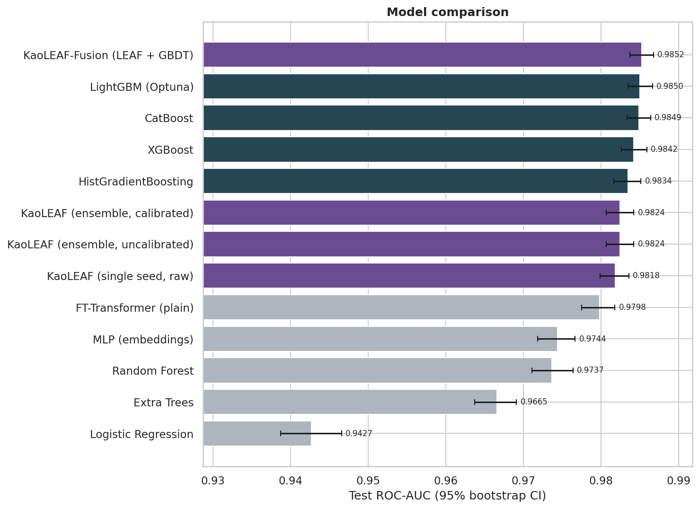
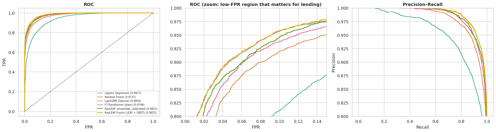
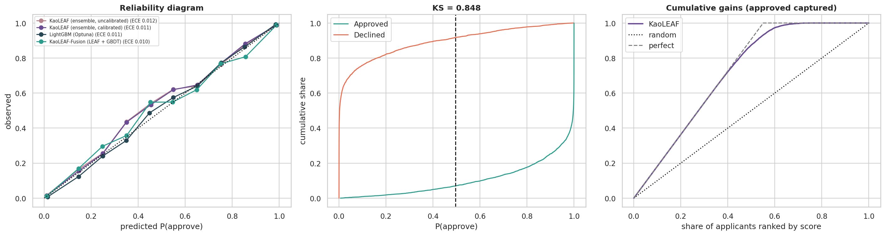
Twenty-four engineered features become tokens, ordered by financial meaning so that neighbours belong to the same block.
Numerics are quantile-mapped to ≈ N(0,1) on train only. Each feature learns its own frequencies.
$$\mathbf e_j=\mathrm{ReLU}\!\Big(W_j\big[\sin(2\pi \mathbf c_j\tilde x_j)\,;\,\cos(2\pi \mathbf c_j\tilde x_j)\big]\Big)+\tilde x_j\,\mathbf a_j+\mathbf b_j,\qquad \mathbf t_j=\mathbf e_j+\mathbf p_j$$ $$H^{(0)}=[\mathbf t_{\mathrm{cls}};\mathbf t_1;\dots;\mathbf t_{m+c}]\in\mathbb R^{(m+c+1)\times d}$$A gated depthwise-separable convolution slides along the semantic order.
$$\tilde H=H+\mathrm{Drop}\big(\mathrm{GLU}(\mathrm{PW}(\mathrm{DW}_{k}(\mathrm{LN}(H))))\big)$$Pre-LayerNorm multi-head self-attention with a GEGLU feed-forward, repeated for L layers.
$$\mathrm{Attn}_h(H)=\mathrm{softmax}\!\Big(\tfrac{QK^\top}{\sqrt{d_h}}\Big)V,\qquad H'=\tilde H+\mathrm{MHA}(\mathrm{LN}\,\tilde H),\quad H''=H'+\mathrm{FFN}(\mathrm{LN}\,H')$$Attention pooling is concatenated with the [CLS] state to form the reusable embedding z.
$$\alpha=\mathrm{softmax}\!\big(H_{1:}\mathbf q/\sqrt d\big),\quad \mathbf z=\mathrm{GELU}\!\Big(W\big[\mathrm{LN}(h_{\mathrm{cls}})\,;\,\textstyle\sum_i\alpha_i h_i\big]\Big),\quad \hat p=\sigma\!\big(f(x)/T\big),\ f(x)=\mathbf w^\top\mathbf z+b$$Stage 1 reconstructs masked features without labels. Stage 2 fine-tunes with AdamW, warm-up plus cosine decay and early stopping on validation AUC.
$$\mathcal L_{1}=\tfrac{1}{|\mathcal M_{\mathrm{num}}|}\sum_{j\in\mathcal M_{\mathrm{num}}}(\hat x_j-\tilde x_j)^2+\overline{\mathrm{CE}}_{\mathrm{cat}},\qquad \mathcal L_{2}=\mathrm{BCE}\big(f(x),y\big),\qquad \bar f=\tfrac1S\sum_{s=1}^{S}f_s$$Temperature scaling is fit on validation only. The fitted value is T* = 1.044.
$$T^\star=\arg\min_T\ \mathrm{NLL}\big(\sigma(\bar f/T)\big),\qquad \mathrm{Score}=\mathrm{round}\big(300+550\,\hat p\big),\qquad \text{bands } A\text{–}E \text{ at } \hat p\in\{0.2,0.4,0.6,0.8\}$$Integrated Gradients start from the median applicant in quantile space and satisfy completeness. Categoricals use UNK-occlusion.
$$\mathrm{IG}_j(x)=(\tilde x_j-\tilde x^{0}_j)\!\int_0^1\!\partial_j f\big(\tilde x^{0}+\alpha(\tilde x-\tilde x^{0})\big)\,d\alpha,\qquad \sum_j \mathrm{IG}_j=f(x)-f(\tilde x^{0})$$A logistic stacker over the logits of KaoLEAF and the three strongest boosted models, fit on validation with the test set untouched.
$$\hat p_{\mathrm{fusion}}=\sigma\!\Big(\beta_0+\beta_{\mathrm{leaf}}\,\bar f+\textstyle\sum_{g\in\{\text{LGBM, Cat, XGB}\}}\beta_g\,\mathrm{logit}(\hat p_g)\Big)$$Single-seed ablation under an identical budget. Differences near 1e-3 AUC are inside seed noise; only the periodic embedding shows a consistent gap, so we claim only that.
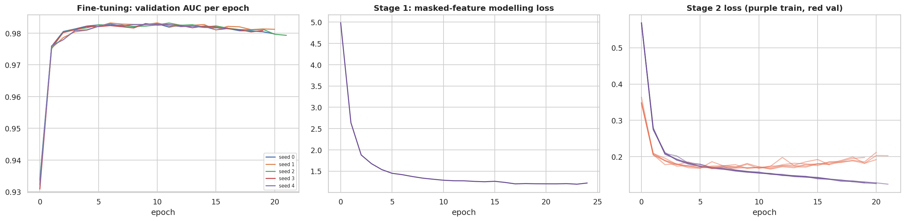
Representation, prediction and decision policy are separate layers. Thresholds and the hard rule for defaults_on_file live in policy, so a bank can change them without retraining.
Real output of the notebook's inference demo: one applicant, not a benchmark. Solid bars push toward approval, hatched bars against.
| Band | Score range | Applicants | Share | Predicted | Observed approval |
|---|---|---|---|---|---|
| A · Very strong | 740–850 | 4,632 | 46.3% | 97.5% | 97.8% |
| B · Strong | 631–740 | 609 | 6.1% | 70.4% | 71.1% |
| C · Moderate | 520–630 | 464 | 4.6% | 50.3% | 57.8% |
| D · Weak | 410–520 | 504 | 5.0% | 29.7% | 33.9% |
| E · Very weak | 300–410 | 3,791 | 37.9% | 2.3% | 2.7% |
Observed approval rises monotonically from E to A and tracks the predicted rate in every band.
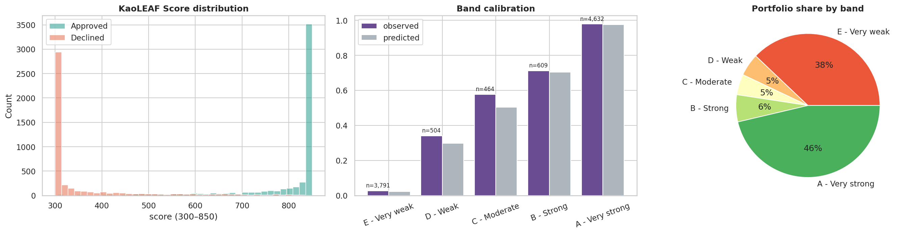
Importance is reported per feature and per financial block, and cross-checked against a different model family.
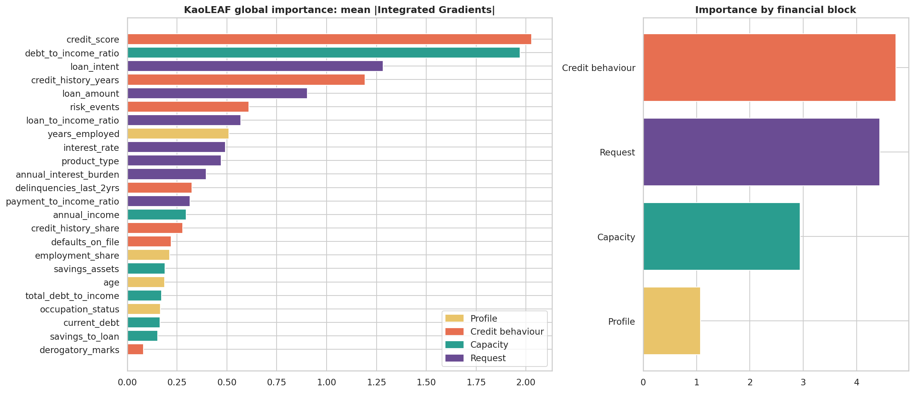
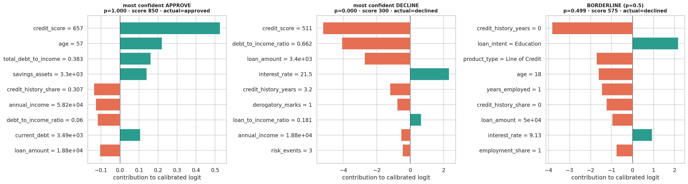
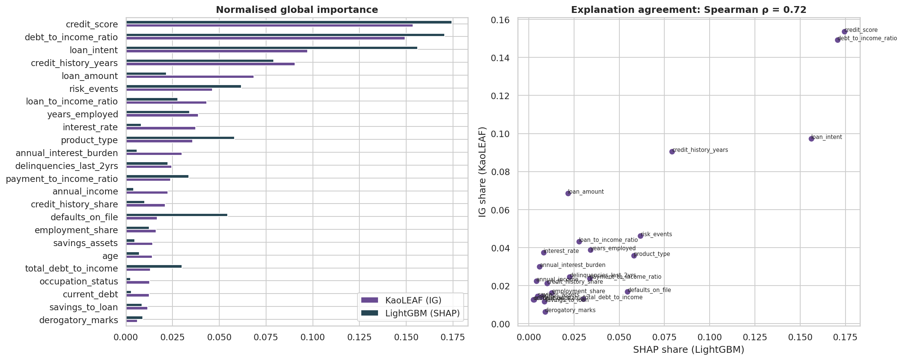
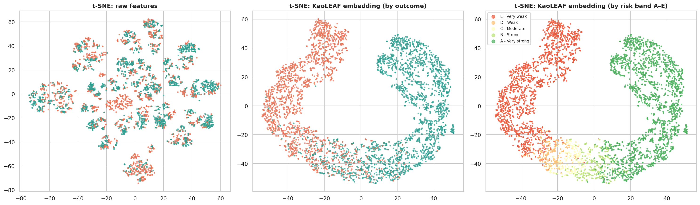
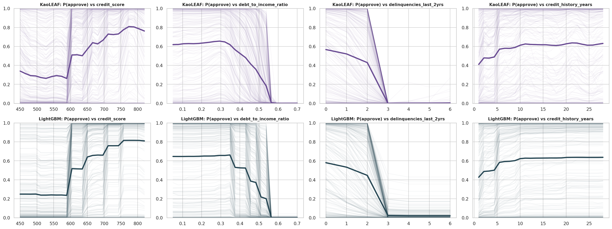
KaoLEAF is benchmarked on the public Realistic Loan Approval Dataset (US and Canada) from Kaggle, created by parthpatel2130: 50,000 applicants, 55.0% approved. The same method is planned for GSB data, which cannot be made public.
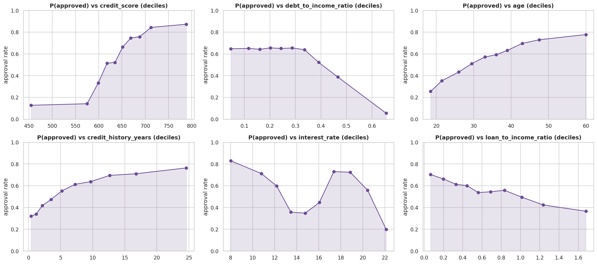
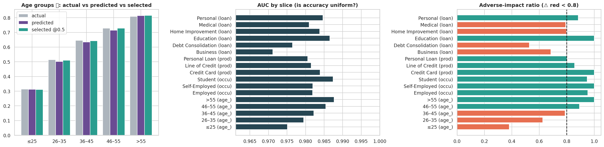
The data is cross-sectional, so the local operator convolves over ordered financial features, not over time; the temporal encoder is the next step for longitudinal data. The dataset appears simulated, so results show method behaviour rather than bank performance. age is a protected attribute and a variant without it is supported. Pricing features may leak underwriting outcomes in production. Results come from one dataset and one split. The model is not validated for production lending.
Manuscript in preparation. Please cite the project page below.
@misc{panboonyuen2026kaoleaf,
title = {KaoLEAF: Knowledge-Augmented Optimization and Learned Embeddings
for Automated Feature Representation},
author = {Panboonyuen, Teerapong},
year = {2026},
note = {Government Savings Bank Artificial Intelligence Laboratory (GSBAIL).
Manuscript in preparation.
Code and project page: https://kaopanboonyuen.github.io/KaoLEAF}
}